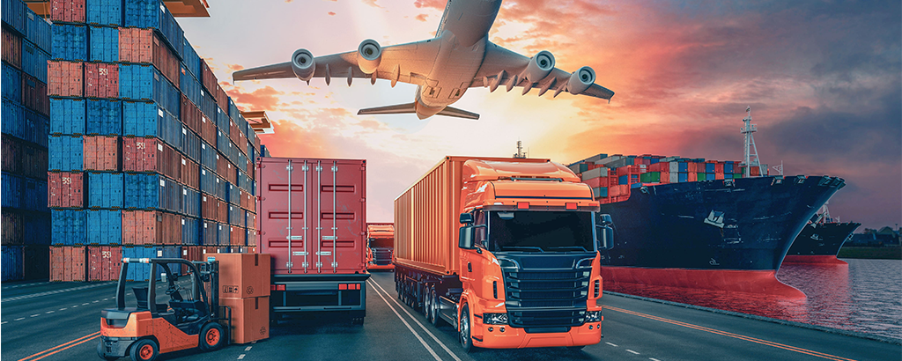

Transportul in Prezent
În prezent, transportul este un aspect esențial al vieții moderne, iar evoluția sa continuă să aducă inovații și schimbări semnificative în felul în care ne deplasăm și interacționăm cu lumea din jurul nostru. Iată câteva aspecte cheie ale transportului din prezent:
Diversitatea mijloacelor de transport: În zilele noastre, avem acces la o varietate largă de mijloace de transport, de la automobile, autobuze, trenuri și avioane, până la biciclete, trotinete electrice și alte mijloace de transport alternativ. Această diversitate ne oferă opțiuni multiple pentru a ne deplasa în funcție de nevoile noastre și de circumstanțe.

Tehnologia și inovația: Avansul tehnologic a adus îmbunătățiri semnificative în domeniul transportului, cu mașini mai eficiente din punct de vedere al consumului de combustibil, vehicule electrice, sisteme de conducere automată și alte tehnologii inovatoare care îmbunătățesc siguranța și eficiența transportului.
Mobilitatea urbană: În orașele aglomerate, există o accentuare a preocupărilor legate de mobilitatea urbană durabilă. Astfel, au fost dezvoltate soluții precum sistemele de transport public extinse, piste pentru biciclete, împărțirea mașinilor și alte inițiative pentru a reduce poluarea și congestionarea traficului.
Impactul asupra mediului: Deși transportul modern aduce beneficii semnificative în ceea ce privește mobilitatea și accesibilitatea, are și un impact semnificativ asupra mediului înconjurător. Emisiile de gaze cu efect de seră, poluarea atmosferică și zgomotul sunt doar câteva dintre problemele cu care ne confruntăm în prezent și pentru care căutăm soluții sustenabile.
Conectivitatea globală: Transportul modern a permis o conectivitate globală fără precedent, facilitând călătoriile și schimburile culturale, economice și sociale între diferite regiuni și țări din întreaga lume. Acest lucru a dus la o mai mare interdependență și interconectivitate între oameni și comunități din întreaga lume.